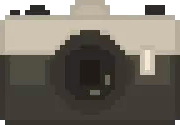
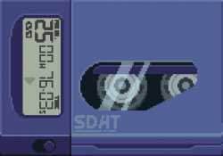

Life/Zindagi/General
2023 Jan 28 – College
2022 Jun 30 – Post JEE Feels
Technology
2022 May 05 – Blog Up And Running
Academia
2023 Jan 28 – College
Humour
Photography 
2022 May 09 – Birdwatching At A Local Park: 2015
2022 Apr 29 – Shimla Trip 2015
Science
Music 
Ramblings
Art
2022 Apr 27 – Pixel Art is the true 'Digital Art' Form
Culture
2022 Oct 09 – Parantha Teir List
2022 May 21 – Hindi Patrakaarita Ka Patan
2022 May 12 – The Only Day Your Dad Will Ever Ask You To Watch TV
Spirituality